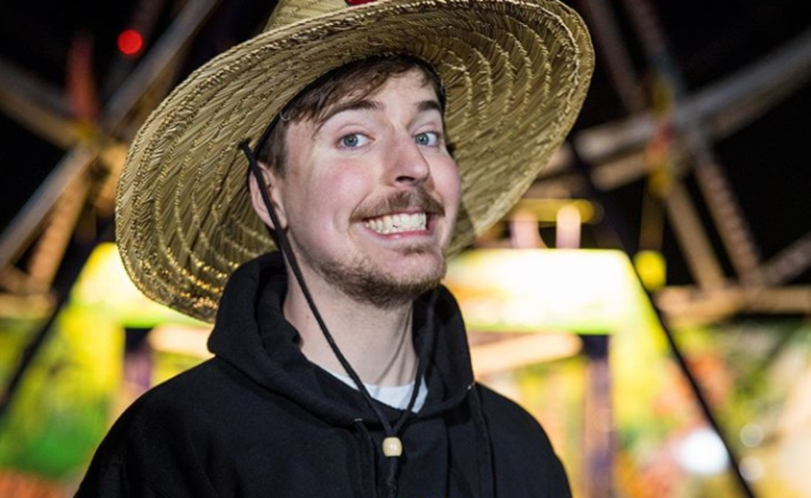
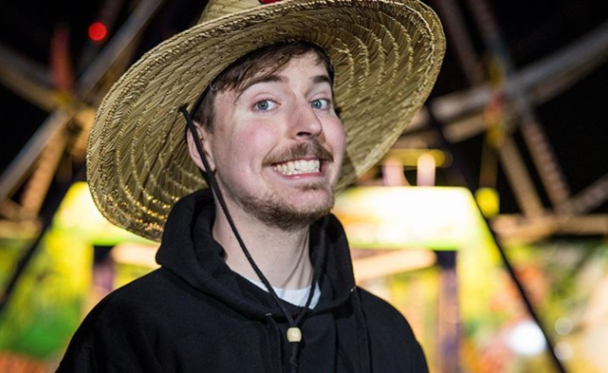
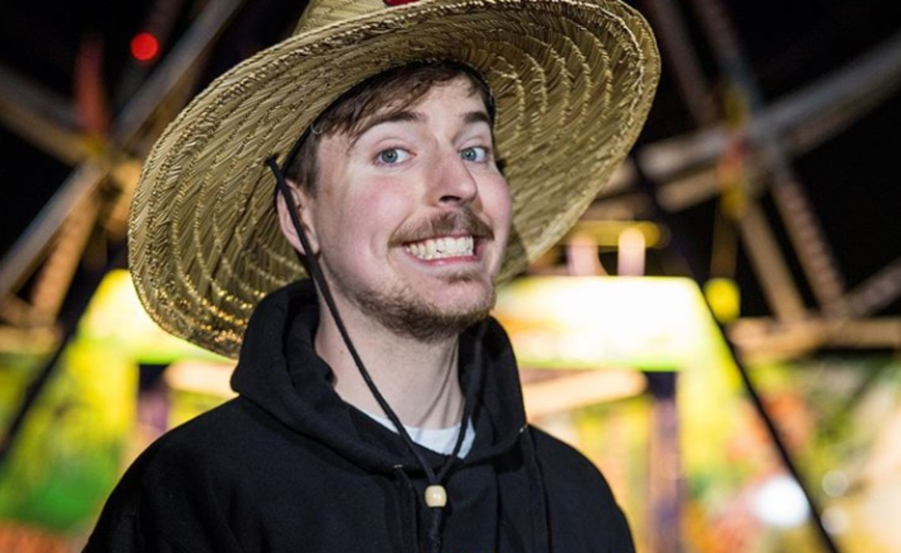

While there are 200+ comedians who are actively creating content for the 10 million Sri Lankan nternet users, I saw
creative gap in absurd yet intellectual comedy. I started my journey with dubbed content while being inspired by creators
like Key & Peele, Mr. Beast, Rudsssy Mancuso, and PewDiePie.
<<<<<<< HEAD
I drew inspiration from their purposes. For an example, Key & Peele mocks gender and ethnic stereotypes and social
awkwardness while Mr. Beast is a viral philanthropist. I combined their individual purposes and adopted them into my
brand.
Therefore, the purpose of Pissu Kanna is to ignite conversations by mocking stereotypes and social awkwardness while the
gains are used for philanthropic purposes. The virality is just a by-product of this overall purpose.

Simply put, it grew because my content was unique and I published regularly. I started using on-the-edge
sinhalese phrases to mock social awkwardnes and it was welcomed while my channels grew exponentially.
Here are the strategies that I used to grow this fast.
 >>>>>>> 68f28d1f9453c75b671dfee6425d5e4356d755a3
>>>>>>> 68f28d1f9453c75b671dfee6425d5e4356d755a3